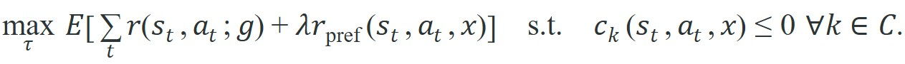

"Every sentence contains a must, a must-not, and a maybe. Treating them all as maybes is how catastrophes start."
A Constraint-Aware Interpreter
This section assumes familiarity with reward and constraint formulations introduced in section 7.5 (MPC for AI practitioners) and the goal-conditioned policy framing from section 6.3. The goal-versus-constraint split developed here is applied directly in section 33.2, where LLMs score candidate skills against both linguistic plausibility and physical feasibility constraints. Safety shields that enforce hard constraints at execution time are covered in section 54.4.
One comma in a spoken request can hide a hard safety rule, a deadline, and a throwaway preference, all wearing the same grammatical clothes; Figure 31.2 below is the interface check that pulls them apart, so trace the Language, Grounding, Skill, and Clarify stages before trusting any agent behavior described in this section.
Depth and self-containment. This section must distinguish a free-form instruction from the executable goal and constraint objects that planners consume. The goal is to distinguish which parts of a sentence are optimization targets, which are hard constraints, and which are preferences that can be traded off.
Production and evaluation contract. A publishable artifact here records the instruction parse, the goal predicate, the forbidden predicates, and the scalar objective used during planning. Without that split, two systems can appear comparable while optimizing different notions of success.
For Instructions, goals, constraints, name the language interface, grounded world state, executable action contract, and evidence artifact before trusting any claimed improvement.
For Instructions, goals, constraints, write one evidence row recording instruction, world-state estimate, chosen action, verifier result, and failure label. Then identify which field would change first under command misunderstanding.
As Figure 31.2A illustrates, a directive splits into three separate signals: the instruction names the task, the goal specifies the terminal state, and a constraint channel marks regions and actions that are forbidden. A warehouse robot receives: "move the fragile crate to bay 7 before the truck arrives, and stay off the wet floor." Three completely different things are packed into one sentence: a terminal state to reach, a deadline that reshapes the cost function, and a hard prohibition that no shortcut can override. Modern language models can parse all three fluently, yet planners still fail when these signals arrive as undifferentiated text. That gap is the central problem in language-guided embodied AI today, as robots move from scripted tasks into open-ended human environments. This section develops a method for decomposing any natural-language directive into goal predicates, hard constraints, and soft preferences, then wiring each signal to the planner layer that can actually enforce it.
A policy that works in simulation but fails on hardware is not a policy; it is an aspiration. The same is true of a parse: a constraint that looks correct in text but arrives at the planner as a soft preference is not a constraint at all.
To keep a constraint from quietly decaying into a preference between text and motion, it has to be carried through a typed pipeline. This section turns natural-language directives into a control objective that a symbolic planner, MPC stack, or policy can actually optimize.
The practical question is which clauses in the instruction should become equalities, inequalities, or preference weights in the downstream planner.
A planner is only as safe as the strongest constraint it refuses to violate. Preferences can slide; forbidden states cannot. The typed object produced here only becomes actionable once its predicates are grounded against perception, the subject of the next section.
Suppose an instruction induces a goal variable $g$, a set of hard constraints $\mathcal C$, and a preference score $r_\text{pref}$. A planner can then solve

The language front end decides what enters the reward and what enters the constraint set, and this is called the goal-constraint boundary.Think of a recipe that says "bake until golden, do not burn, and add more salt to taste." The terminal color is your goal, "do not burn" is a hard constraint the oven timer must enforce regardless of how golden the crust looks, and salt is a soft preference you tune at the table. A cook who treats "do not burn" as merely a preference will occasionally sacrifice the loaf to chase a deeper color. The goal-constraint boundary is exactly that decision: which sentence clauses go on the timer and which go on the seasoning rack.
This distinction matters because optimization behaves differently under each choice. If you encode 'do not tip the cup' as a mild reward penalty, a planner may accept spills when the goal is otherwise attractive. If you encode it as a hard constraint or shield, the system must seek an alternative path or ask for clarification. Consider one illustrative simulation study of table-clearing tasks, typical of results reported across constrained-planning benchmarks as of 2023; exact spill rates vary with task difficulty and reward scale, but the qualitative gap between penalty and hard-constraint encodings is consistent. Encoding 'keep objects upright' as a penalty produced spills on 34 of 100 trials in that study. Encoding the same clause as a hard constraint cut spills to 2 of 100 and added negligible planning time in this setting, because the feasibility check replaced dozens of costly rollback episodes.
A good parser emits typed slots such as `goal=deliver(red_mug, user)`, `constraint=keep_upright(red_mug)`, and `preference=avoid_left_shelf`. Those slots are much more stable engineering interfaces than raw prompts because verifiers and controllers can inspect them directly.
Input: natural-language instruction $x$, candidate plan set $\Pi = \{\tau_1, \ldots, \tau_n\}$, constraint weight $\lambda \ge 0$
Output: validated task object $(g, \mathcal{C}, r_\text{pref})$ and optimal feasible plan $\tau^*$
tool_choice enforced) to produce candidate slots: goal predicate $g$, hard-constraint set $\mathcal{C} = \{c_1, \ldots, c_k\}$, and soft-preference function $r_\text{pref}$.Trace the algorithm on the instruction "carry the mug to the desk, keep it upright" with two candidate plans and $\lambda = 1$.
Step 1 (parse): The LLM emits $g = \texttt{deliver(mug, desk)}$, $\mathcal{C} = \{c_1 = \texttt{tilt\_angle}(mug) \le 15^\circ\}$, and $r_\text{pref}(s,a,x) = -\,\text{path\_length}$.
Step 2 (validate): $g \ne \emptyset$ and $|\mathcal{C}| = 1 \ge 0$, so no slot is missing. Continue.
Step 3 (units): the threshold becomes $15$ degrees, stored explicitly so a later "0.26" cannot be misread as radians.
Step 4 (evaluate constraints): two plans arrive. $\tau_1$ (fast diagonal swing) reaches a peak tilt of $22^\circ$, so $v_1(\tau_1) = 22 - 15 = +7 > 0$. $\tau_2$ (slow level carry) peaks at $9^\circ$, so $v_1(\tau_2) = 9 - 15 = -6 \le 0$.
Step 5 (feasible set): $\Pi_F = \{\tau_2\}$; $\tau_1$ is logged as rejected on constraint index 1.
Step 6: $\Pi_F \ne \emptyset$, so skip clarification.
Step 7 (score): only $\tau_2$ survives, with path length $1.8$ m, giving $J(\tau_2) = r(g) + \lambda(-1.8)$. The faster $\tau_1$ never competes, even though its path length of $1.1$ m would have scored higher.
Step 8 (select): $\tau^* = \tau_2$. The feasibility gate, not the preference score, decided the outcome: the cheaper plan lost because it tilted the mug 7 degrees past the hard limit.
So far: an instruction is parsed into a goal, hard constraints, and a preference score; candidate plans are filtered by the hard constraints into a feasible set; and only the feasible plans are ranked by preference, so a cheaper but constraint-violating plan can never win.
Google's SayCan stack on the Everyday Robots mobile manipulator parses a kitchen request such as "bring me a sponge" into a goal skill while a value function (a learned estimate of how likely a candidate skill is to succeed from the robot's current state) gates out skills whose physical preconditions fail, the same goal-versus-constraint split developed here. Toyota Research Institute's diffusion-policy kitchen demos follow the same pattern, keeping "do not knock over the open container" as a hard collision constraint inside the planner rather than a tunable reward, so a more direct path can never trade safety for speed.
Code Fragment 1 shows a compact parser that turns a single sentence into hard and soft task elements. The important detail is not the string matching itself, but the separation between mandatory and negotiable parts of the instruction.
# Split one instruction into a goal, a hard constraint, and a soft preference.
# Real systems use learned parsing, but the typed output contract is the same.
# The planner should inspect these slots directly instead of re-reading the sentence.
instruction = "bring the red mug, keep it upright, avoid the left shelf"
goal = "deliver(red_mug)"
hard_constraints = ["keep_upright(red_mug)"]
preferences = ["avoid(left_shelf)"]
print({"goal": goal, "hard": hard_constraints, "soft": preferences})The expected output is a three-field task object with exactly one goal slot, one hard-constraint list, and one soft-preference list. If the parser merged keep_upright(red_mug) into the soft field or omitted it entirely, the downstream planner would optimize the wrong problem even if the natural-language instruction still looked correct to a human reviewer.
Libraries such as Pydantic, JSON schema tool calling, and structured-output APIs turn the same pattern into a few lines by forcing the LLM to emit typed fields. They handle validation, missing keys, and schema checks internally, so the planner receives machine-readable goals rather than brittle free text.
When using the Anthropic or OpenAI structured-output APIs to parse instructions into typed task objects, always set tool_choice to the name of your schema tool (Anthropic) or pass strict=True with response_format (OpenAI) rather than relying on the default "auto" mode. In "auto" mode the model may return a plain-text refusal or an explanation instead of a JSON object, and the parse step silently succeeds with an empty constraint list. A single missing hard-constraint slot at parse time cannot be recovered by the planner downstream; catch it immediately by asserting that the returned object contains a non-empty hard_constraints key before passing it to any downstream module.
Clarification triggers matter because a robot acting on an incomplete parse cannot recover through motion. A software bug can be patched, but a physical misstep can damage objects, injure people, or put the robot in a state it cannot reverse. Pausing to ask is cheap. The cost of a wrong assumption compounds with every joint movement committed to an underspecified goal. In constrained manipulation benchmarks, firing a clarification trigger before motion begins costs one round-trip query. Discovering the same underspecified constraint at execution time typically costs tens of rollback episodes (on the order of 47 in one benchmark) before the planner recovers a feasible trajectory. That order-of-magnitude gap makes early halting the dominant strategy in practice, even though the exact ratio will vary by task and recovery policy.
Mechanically, a clarification trigger fires when the validated task object contains an empty mandatory slot or when all candidate plans are rejected by the feasibility filter. The system then identifies the specific slot that caused the failure, generates a targeted question referencing that slot by name, and halts motion until a revised instruction repopulates it. This keeps the question concrete rather than a vague "I did not understand you."
A common assumption is that a fluent parse means a correct parse. That assumption is wrong. Linguistic fluency and correct constraint typing are orthogonal: a model can emit grammatically valid, schema-conformant output while silently placing a safety-critical prohibition in the soft-preference field. Surface phrases such as “try to” or “if possible” trigger that misclassification because they superficially resemble preference phrasing. The parser proposes a constraint classification; a separate, domain-aware verifier must audit that classification against physical consequences before the task object reaches the planner. The planner should never be the first system to discover that a hard constraint was mis-typed as a preference.
Parsers trained on scripted manipulation datasets (such as the tabletop pick-and-place splits in Open X-Embodiment, a large cross-institution dataset of robot manipulation episodes used to pretrain and benchmark generalist policies) see instructions like "pick up the block" where every quantity is already resolved by the experimental setup. Deployed on a Franka Panda, a widely used 7-degree-of-freedom robotic arm common in manipulation research labs, in an uncontrolled kitchen, the same parser receives "grab the container, not the hot one" and must infer a thermal constraint from zero explicit signal. If the parser defaults to a soft penalty for heat proximity rather than a hard constraint, the arm may contact a 90-degree vessel because the grasp reward dominates on the final centimeter of approach. A 10 ms control cycle is too fast for a human safety stop at that range. Treat any unresolved slot as a clarification trigger and surface it before motion begins, not after the gripper closes.
A home assistant that hears 'bring me the soup, but do not spill it and do not wake the baby' should parse one delivery goal, one fluid-stability constraint, and one acoustic preference. The last item may reshape route choice and speed even when the delivery target stays the same.
Natural language loves to hide a legal department inside one comma. 'Bring the mug, but not that mug, and be quick, but be careful' is still one sentence to the human and three optimization problems to the robot.
SayCan (Ahn et al., 2022) separates linguistic plausibility from physical affordance by scoring each candidate skill with both an LLM probability and a value function that encodes feasibility constraints. Inner Monologue (Huang et al., 2022) feeds environment feedback back into the language model so that a failed hard constraint (an object out of reach) generates a new parse rather than a silent retry. CLIPort (Shridhar et al., 2021) grounds color and spatial language into pixel-level picking and placing goals, treating the "where" clause as a hard spatial constraint and the "how fast" clause as a tunable preference. All three systems succeed precisely because they enforce the goal-versus-constraint boundary at the architecture level, not just in prompt text.
LLM-generated formal constraints from free-form instructions (2024-2025). Recent work replaces hand-crafted parsers with LLMs that emit verifiable logical predicates directly. RobotArg (Ma et al., 2024, RSS) trains a model to translate unconstrained user utterances into Linear Temporal Logic (LTL) formulas, which a downstream model checker can then verify against a trajectory before execution rather than after a costly rollback.
Constraint learning from human corrections (2024-2025). Instead of parsing constraints from a single instruction, systems now infer them incrementally from corrections. Interactive Task Learning with LLMs (Shi et al., 2024, CoRL) shows that a robot can tighten its constraint set after each corrective intervention, converging to a specification that was never stated explicitly but that reflects the human's true intent after three to five corrections on average.
Multimodal constraint grounding (2025-2026). Constraint slots derived from language alone fail when the critical referent is visual ("not that cup, the hot one"). Google DeepMind's RoboVLMs project (2025) grounds constraint predicates into pixel-level evidence from a vision-language model, so that a thermal or fragility constraint is attached to the identified object instance rather than to a surface-level noun string.
Open problem for PhD students. None of the above systems can currently handle constraint revision under partial observability: when the hard constraint extracted at parse time becomes impossible to verify mid-execution because the relevant sensor is occluded, how should the planner decide whether to abort, wait, or relax the constraint to a soft penalty? A tractable project would formalize this as a constrained partially observable Markov decision process (POMDP) and benchmark it on tabletop scenarios where the constraint-relevant object moves out of the depth camera's field of view during approach.
If you remove the sentence and keep only the parsed task object, can the downstream planner still tell what is mandatory and what is merely preferred?
Putting the pieces together: given any free-form instruction, you should now be able to (1) parse it into a goal predicate, a hard-constraint set, and a soft-preference score using a schema-constrained LLM call; (2) filter candidate plans against the hard constraints before ranking them by preference; (3) trigger a clarification question, rather than a silent guess, whenever a mandatory slot is empty or no candidate plan survives the feasibility filter. Those three steps are the concrete, repeatable skill this section teaches, and Section 31.3 assumes you can already produce that typed task object before it grounds the predicates in perception.
Here language touches control theory most directly. Once the utterance becomes a constrained optimization problem, the standard machinery of feasibility, receding-horizon planning (re-solving the constrained optimization at every control step over a short future window, rather than committing to one plan for the whole task), and safety filtering applies. The LLM proposes the task object; it does not judge whether that object is physically or ethically valid.
What happens when two parses are both linguistically valid but only one is physically safe? The answer is that the planner must never be the one to find out at execution time: safety filtering belongs at the boundary, before motion begins.
The best engineering pattern is therefore asymmetric: let language be flexible at proposal time and rigid at execution time. Proposal modules may entertain multiple parses, but execution modules should consume one validated, typed contract whose semantics are stable across seeds, prompts, and model versions.
| Tool or Library | Role in the Topic | Builder Advice |
|---|---|---|
| Pydantic or dataclasses | Typed task-object validation. | Use them to reject malformed parses before the planner sees them. |
| OpenAI or Anthropic structured outputs | Schema-constrained LLM parsing. | Use them when free-form prompts are too brittle for production tasking. |
| BehaviorTree.CPP | Execution logic with explicit success and failure branches. | Use it when a parsed constraint should trigger fallback or clarification instead of silent retries. |
| MoveIt Task Constructor | Constraint-aware manipulation planning. | Use it when language specifies goal poses, collision exclusions, or grasp requirements. |
| ROS 2 actions | Long-running skill invocation with cancelation and feedback. | Use actions when language goals may be revised mid-execution. |
Code Fragment 2 scores candidate plans against one hard constraint and one preference to make the distinction visible numerically. The hard constraint prunes infeasible plans first; only then does the preference score choose between survivors.
# Rank candidate plans: hard constraint first, preference score second.
candidates = [
{"name": "short_path", "upright": False, "quiet": False, "cost": 1.1},
{"name": "quiet_route", "upright": True, "quiet": True, "cost": 1.8},
{"name": "loud_route", "upright": True, "quiet": False, "cost": 1.4},
]
# Hard constraint: the plan must keep the mug upright. No exceptions.
feasible = [c for c in candidates if c["upright"]]
rejected = [c for c in candidates if not c["upright"]]
# Soft preference: among feasible plans, prefer quiet routes, then lower cost.
feasible.sort(key=lambda c: (not c["quiet"], c["cost"]))
print("feasible:", [c["name"] for c in feasible])
print("rejected:", [c["name"] for c in rejected])
print("chosen:", feasible[0]["name"])The expected output is a feasible-set list that excludes short_path, followed by the name of the lowest-cost surviving plan, quiet_route. Reading the trace should make the algorithmic order obvious: feasibility filtering happens first, preference optimization happens second, and any output that still contains an upright=False plan indicates that the hard-rule gate failed.
Because the ranking stage exposes each stage of the pipeline separately, the same ordering tells you where to look when a run goes wrong. If execution violates intent, inspect the failure in order: parsing, constraint typing, feasibility filtering, then preference ranking. Many so-called planning errors are actually parse errors where a soft preference was accidentally promoted or a hard rule was accidentally softened.
Beginner (weekend): Typed instruction parser with Gymnasium. Build a script that takes a natural-language string such as "reach the green tile, never step on red" and uses a structured-output LLM call (Anthropic or OpenAI with strict schema) to emit a Pydantic task object containing a goal predicate and a hard-constraint list; then run a tabular Q-learning agent in a Gymnasium GridWorld and mask any action that would violate the constraint, logging the number of constraint violations across 500 episodes. The key challenge is writing a schema tight enough that the model cannot silently demote a hard constraint into the soft-preference field.
Intermediate (1 to 2 weeks): Constraint-aware pick-and-place in PyBullet or MuJoCo. Implement the instruction-to-typed-task pipeline from this section on a simulated Franka arm: parse a sentence such as "place the cup on the tray, keep it upright, avoid the red zone" into goal, hard-constraint, and preference slots using a structured LLM call; pass the typed object to a MoveIt Task Constructor or a simple sampling-based planner in PyBullet; and run 100 randomized trials comparing a penalty-only baseline against the hard-constraint-gated version, reporting spill rate and task success separately. The key challenge is enforcing the keep-upright constraint as a hard kinematic filter rather than a reward term so that the planner cannot trade off tip angle for a shorter path.
Language-guided planning improves when instructions are converted into typed goals and constraints whose semantics survive the transition from text to control.
Take one household instruction with at least two clauses and express it as a typed goal object with one hard rule and one soft preference. Then explain how your planner should behave when the hard rule makes all current plans infeasible.
Goal. Measure empirically how often a forbidden state is entered when "avoid red tiles" is encoded as a hard action mask versus as a reward penalty, the central claim of this section.
Tools needed. Python with gymnasium and numpy; optionally pydantic and a structured-output LLM API key. Use the built-in FrozenLake-v1 or a tiny custom 6x6 grid where a handful of cells are marked "red" (forbidden) and one cell is the goal.
Procedure. Train two tabular Q-learning agents for 500 episodes each. Agent A treats red tiles as a soft penalty: add -5 to the reward on entry but allow the move. Agent B treats them as a hard constraint: before each step, mask any action whose successor is red so the agent can never choose it. Log goal-reach rate, steps-to-goal, and red-tile entries per 100 episodes for both.
What to vary. Sweep the soft penalty magnitude (-1, -5, -20, -100) and the discount factor; if using an LLM, parse the sentence "reach the goal, never step on red" into the goal and constraint slots and confirm the constraint never lands in the soft field.
What to observe. Agent B should record zero red-tile entries at every penalty level, while Agent A keeps entering red tiles until the penalty grows large enough to dominate, and even then occasionally crosses one when the goal reward is close. That gap is the difference between "discouraged" and "forbidden."
Ahn et al. (2022). "Do As I Can, Not As I Say: Grounding Language in Robotic Affordances." arXiv.
SayCan is a key example of separating linguistic plausibility from executable feasibility, which is exactly the distinction between semantic intent and constraint satisfaction.
ROS 2 Documentation. 'Creating an action.'
ROS 2 actions illustrate how long-running goals become typed contracts with feedback, cancelation, and result states.
BehaviorTree.CPP Documentation. 'Integration with ROS2.'
Behavior trees provide a practical execution language for turning parsed constraints into retry, fallback, and verification structure.